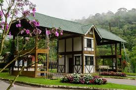

Domingos Martins é um município serrano do estado do Espírito Santo conhecido por sua forte herança europeia,
clima ameno e paisagens naturais exuberantes. Localizado na região das montanhas capixabas, ele fica a cerca de
40 km da capital Vitória, sendo um destino bastante procurado para turismo de descanso e ecoturismo.
O município recebeu esse nome em homenagem a Domingos José Martins, um dos líderes da Revolução Pernambucana. A
colonização da região foi marcada principalmente por imigrantes alemães e italianos no século XIX, o que
influenciou fortemente a cultura local — perceptível na arquitetura, culinária e festas típicas.
Um dos principais atrativos de Domingos Martins é o distrito de Pedra Azul, onde está o famoso Parque Estadual
da Pedra Azul. Nesse parque, destaca-se a Pedra Azul, uma formação rochosa que muda de cor ao longo do dia
devido à incidência da luz solar — um fenômeno bastante curioso e fotogênico.
Além disso, a cidade é conhecida por eventos tradicionais como o Festival Internacional de Inverno de Domingos
Martins, que reúne música, arte e gastronomia, atraindo visitantes de diversas regiões. A culinária local
mistura influências europeias com ingredientes brasileiros, com destaque para cafés coloniais, embutidos, massas
e cervejas artesanais.
Por conta do clima mais frio em relação ao litoral capixaba, Domingos Martins também se tornou um refúgio para
quem busca tranquilidade, natureza e uma experiência diferente dentro do próprio estado. Trilhas, cachoeiras,
pousadas aconchegantes e o charme das montanhas fazem do município um dos destinos mais encantadores do Espírito
Santo.

Baixar PDF de Domingos Martins
Baixar Docs de Domingos Martins
Baixar Arquivos de Domingos Martins em ZIP